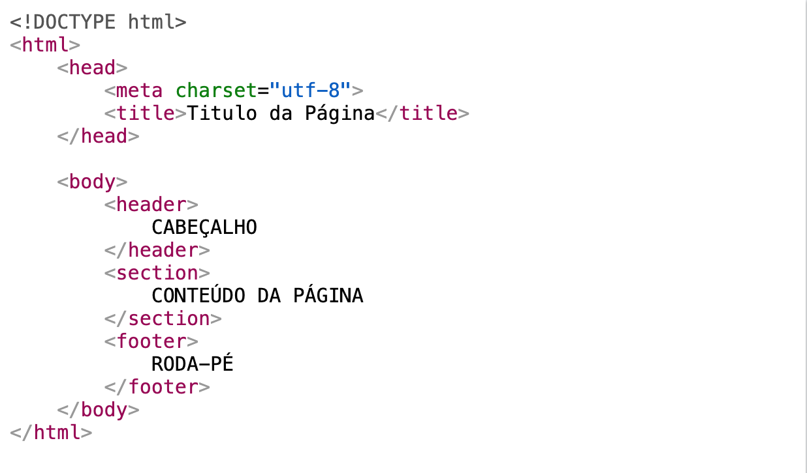

HTML é a linguagem de marcação padrão para criar páginas da web
O que é HTML?
HTML significa Hyper Text Markup Language
HTML é a linguagem de marcação padrão para criar páginas da web
HTML descreve a estrutura de uma página da web
HTML consiste em uma série de elementos
Os elementos HTML informam ao navegador como exibir o conteúdo
Os elementos HTML rotulam partes do conteúdo como "isto é um titúlo", "isto é um parágrafo", "isto é um link", etc.
Estrutura básica de um HTML

Introdução ao CSS
Como já vimos anteriormente, as CSS são as Cascading Style Sheets ( Folhas de Estilo em Cascata). Elas são usadas para configurar um resultado visual dos elementos HTML. As configurações das CSS são realizadas através dos seletores. Vamos ver a anatomia de um seletor
Tipos de CSS
Inline - by using the style attribute inside HTML elements
Internal - by using a style element in the head section
External - by using a element to link to an external CSS file